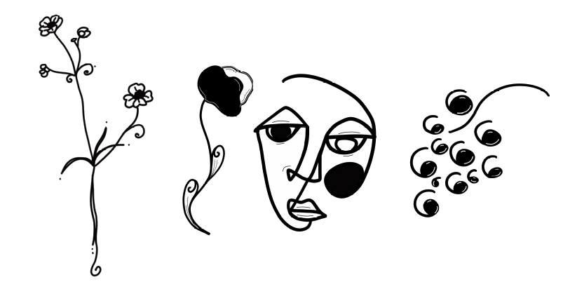

Stora läsupplevelser är svårfångade. Läsning tar tid och ibland är det svårt att veta var man ska söka efter byggstenarna till det egna biblioteket. Du känner dig, vi kan litteratur. Tillsammans hittar vi vägar fram för att du ska lära känna litteraturen, dig själv och din omgivning ännu lite bättre.
Litterär vägledning är en språngbräda för dig som helst läser och reflekterar helt på egen hand. Med avstamp i dina beskrivningar av dina intressen och din livssituation ger vi en gedigen och personlig rekommendation av litteratur som ställer just dina tankar och funderingar i nytt ljus.
Intresseanmälan